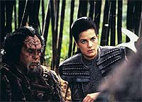
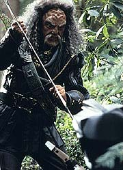
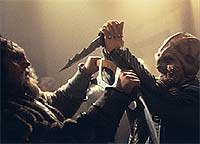
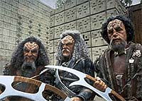
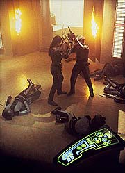

|

|
|
MANCHETE
DO EPISDIO
Dax
brilha como nunca e Klingons da
Srie Clssica ganham nova roupagem
Episdio
anterior | Prximo
episdio
Sinopse:
Data Estelar:
desconhecida.
Um Klingon bbado, de nome Kor,
cria uma tremenda confuso em uma das holosutes de Quark e
acaba sendo detido por Odo. Seu estado to ruim que mesmo o
seu companheiro, um Klingon de nome Koloth, se recusa a tir-lo
de l. Na manh seguinte, Jadzia descobre sobre o ocorrido e
pede a liberao de Kor, sob sua custdia. Acontece que Curzon
Dax foi um grande amigo de Kor, de Koloth e do terceiro recm-chegado,
Kang. Kang anuncia ter encontrado o santurio do infame Albino e
que eles iro atacar tal lugar em breve.
medida que explicaes so dadas descoberto que Curzon
Dax foi muito ligado a esses trs guerreiros e em particular a
Kang, cujo filho foi morto por um inimigo traioeiro mais de 80
anos atrs --esse tal de Albino. Curzon era o padrinho do filho
de Kang, que ganhou o nome Dax em homenagem ao Trill. Aps o
assassinato, os quatro juraram vingana contra o Albino.
Jadzia Dax encontra-se em meio a um difcil dilema moral,
dividida entre os valores da Federao e a lealdade a esses
Klingons. Com dificuldade mesmo de convencer os trs de que ela
era de fato Dax, Kang acaba liberando Jadzia do juramento e diz
que cada hospedeiro deve ter uma vida prpria e no ficar
pagando velhas dvidas eternamente.
Jadzia continua inquieta e conversa com Kira sobre o ato de tirar
a vida de algum. Kira lhe oferece um conselho similar ao dado
por Kang, mas Dax diz que deve isso tanto aos Klingons quanto a
Curzon. Mas ela tem de convencer os Klingons a deix-la ir com
eles primeiro.
 Kor
no tem maiores objees, e Koloth convencido, aps um
duelo com Bat'leth. Kang, porm, continua decidido e a probe de
ir com eles. Em uma ltima tentativa, Dax usa uma estratgia que
Curzon utilizou uma vez contra Kang, na mesa de negociaes.
Isso funciona novamente e o Klingon acaba enfurecido e permite a
ida da Trill na misso. Ben Sisko ainda tenta persuadi-la a no
ir, mas ela est decidida a ir e diz que vai arcar com as consequncia
disso quando (e se) voltar.
Na viagem rumo ao planeta do Albino em uma Ave de Rapina Klingon,
o plano proposto por Kang, de uma assalto direto, parece mais uma
tentativa de suicdio para Jadzia. Depois Kang acaba por
confessar que combinou com o Albino uma situao em que eles
fariam um ataque frontal contra uma fora maior que a deles na
base de 10 para 1. Por isso Kang no queria que ela viesse, ele
apenas combinou uma morte herica, visto que a fortaleza
intransponvel e que todos j estavam muito cansados da tal caada,
de mais de 80 anos. Dax oferece um plano para fazer com que os
feisers dos guardas do Albino no funcionem e Kang concorda.
 A
estratgia da Trill surte efeito --uma distrao na sala de
armamentos da fortaleza e o corte dos seus sensores deixam o
albino s cegas e sem feisers. Os quatro cortam seu caminho, na
base do Bat'leth, at a cmara principal do Albino, onde uma
batalha mortal se realiza. Koloth morre e Kor fica muito ferido
(mas vivo). Em um combate com o Albino, Kang tambm cai
mortalmente ferido e fica a cargo de Jadzia matar ou no o
Albino. Ela hesita e o Albino cai: Kang, em um esforo final,
usou sua faca e agradece a Jadzia por ter guardado o ltimo golpe
pra ele. Ele diz que hoje era da fato um bom dia pra morrer e
assim o faz, ao que ela responde que nunca um bom dia pra
perder um amigo. Jadzia volta pra estao, e no OPS encara sem
palavras seus dois oficiais superiores e volta ao trabalho.
Comentrios:
Sem dvida a melhor coisa desde "Whispers",
este pico Klingon nos oferece o melhor momento de Jadzia Dax e
de Terry Farrell (sendo "Rejoined", da quarta
temporada, ainda um forte rival neste ponto) em toda a srie.
Aqui temos dilogos memorveis, atuaes absolutamente
perfeitas de todos os envolvidos (talvez o nico elo mais fraco
tenha sido Campbell) e uma execuo absolutamente fantstica
sob a competente batuta de Kolbe. Uma excelente, divertida e
contagiante hora de televiso. Saiba o porqu, sem a necessidade
de cumprir nenhum juramento de sangue no processo, nos comentrios
abaixo.
Antes de uma anlise propriamente dita, dois pontos razoavelmente
delicados devem ser discutidos.
 O
primeiro trata da possibilidade de que os trs Klingons
apresentados na srie original (Kor, Koloth e Kang), tivessem laos
de amizade to estreitos como os descritos aqui. De fato no
existe nada cannico que possa substanciar tal relacionamento,
mas levando em conta o elevado "cool factor" (e o
associado potencial de publicidade) por termos essas famosas
figuras em vez de alguns desconhecidos "Klingons da
semana", isso facilmente perdovel e compreensvel. Sem
maiores problemas.
(A introduo da amizade de Curzon com este trio faz extremo
sentido, levando em conta a carreira diplomtica do Trill. De
fato, mais tarde, seria confirmado durante a srie que Curzon foi
um dos principais responsveis pelo estabelecimento do acordo de
Kithomer, de novo de forma consistente com este episdio.)
O segundo trata da difcil conexo entre os Klingons da srie
original de Jornada e os Klingons da Nova Gerao
e alm. Aqui no se trata simplesmente de maquiagem, mas sim da
prpria caracterizao da raa. De alguma forma, e em algum
momento, antes do incio da Nova Gerao (para acomodar
o personagem Worf?), os Klingons, incialmente viles caricatos,
meio que trocaram de caracterizao com os at ento nobres
Romulanos (como vistos em "Balance Of Terror" e "The
Enterprise Incident", ambos da srie original).
Por isso fica muito difcil tentar estabelecer algum tipo de
conexo entre os trs Klingons deste episdio e suas verses
do passado. O mais prtico simplesmente no tentar faz-lo e
aceitar tais personagens como dados e extrapolar sua presente
caracterizao para o passado.
Passando por esses detalhes espinhosos, o resto tranqilo.
 A
trama direta e simples. Mesmo a revelao do acordo de Kang
com o Albino chega sem surpresa. O que importa que a histria
brotava sempre, em toda cena, dos personagens. assim que se
escreve televiso. Pequenos detalhes do estilo de Fields se fazem
presentes no roteiro, como, por exemplo, introduzir brevemente (e
antecipadamente) um elemento que ser explicado de forma completa
mais tarde. O final do episdio muito interessante, por
colocar lado a lado uma "gloriosa batalha pica" e uma
sutil mensagem contra a violncia, grande trabalho de Fields em
geral.
(Um bom ponto tambm que o Albino no perdeu a luta por
estupidez. Ele percebeu rapidamente o que estava acontecendo e
iniciou uma estratgia de emergncia bem rpido. Para seu azar,
os trs Klingons e Dax foram MAIS rpidos.)
Proporcionalmente Koloth foi o mais bem tratado de todos, se
levarmos em conta que em "The Trouble With Tribbles"
ele foi pouco mais que um bufo, servindo de alvio cmico o
tempo todo. Sua rigidez talvez no se encaixe to bem em um
Klingon tpico, mas at certo ponto aceitvel, apesar de ser
de longe o menos interessante dos trs.
Kor foi o mais divertido (e com o maior valor de entretenimento
agregado) dos trs. Aparentemente tambm aquele com menos ateno
para tradies ou tica. Ele no estava muito interessado nos
termos exatos do juramento de sangue, ele queria simplesmente se
vingar e tomar um porre depois.
Kang foi de longe o mais nobre do trio, mesmo levando em conta sua
"quase-traio".
Foi (provavelmente) o melhor episdio de Dax em toda srie e fez
total sentido, principalmente devido aos preciosos elementos de
caracterizao introduzidos em episdios passados,
especialmente em "Playing
God". Talvez o ponto alto da sua interao com os
Klingons tenha sido a constatao do fato de que em seu corao
as palavras de honra Klingon cabiam exatamente, o que no era
verdade quando elas saam da sua boca. Projetar tal noo e ao
mesmo tempo apresentar uma frustrao controlada com a situao,
por no conseguir ser totalmente convincente em suas palavras
como queria, e como j havia sido em outra vida, foi um trabalho
brilhante de Farrell.
Ao final ela se mostrou digna de seu juramento, alm de qualquer
dvida. Ela teve que convencer Kor que, nos olhos dela, ele foi,
e sempre ser um heri. Ela teve que convencer Koloth que
possua a suficiente fora e habilidade para acompanh-los em
sua misso. J Kang teve de ser convencido de que o desejo de
Dax e a necessidade dela de estar envolvida na misso eram
realmente fortes e sinceros.
 A
cena entre Kira e Dax foi o ponto alto do episdio (e talvez a
mais intensa cena entre as duas em toda a srie), incluindo o eco
da pergunta (a Kira) "Quantos Cardassianos voc j
matou?" do episdio "Duet" (da primeira temporada)
e o "Quem? Eu?" de Dax, literalmente clamando por ser
levada a um canto e ser ouvida. A amizade entre Jadzia e Ben
Sisko, j devidamente estabelecida em "Playing
God", assume aqui um patamar ainda mais elevado, em
mais uma potente cena. A cena final sem palavras no OPS (com Dax,
Kira e Sisko) foi espetacular.
(Na conversa entre Kira e Dax temos pela primeira vez mencionado o
"tabu de reassociao" Trill, que indica que toda nova
vida de um Trill associado tem de ser uma NOVA vida! Tal tabu
seria tema do episdio "Rejoined", da quarta
temporada.)
A direo de Kolbe foi realmente espetacular, desde a
inteligente forma de introduzir Kor no comeo do episdio at
as excelentes cenas de ao ao final (com boa msica de
McCarthy e coreografias de Madalone e Curry). Mas a cena que
desponta como a mais importante do episdio foi a de Dax e Kira,
com uma verdadeira aula de "closes" e uma iluminao
particularmente inspirada. Talvez um ponto negativo seja a falta
de um close na face de Kang na hora de sua morte (mas que pode ser
perdoado, pois tnhamos exatamente Dax, em primeiro plano,
lamentando o ocorrido).
(A cena da derrota inicial de Kang frente ao Albino merecia um
pouco mais de esforo. Os envolvidos poderiam ter buscado uma
melhor soluo do que ter Kang espatifando o seu Bat'leth contra
uma esttua.)
As atuaes de Shimerman, AuberJonois, Brooks e Visitor
(especialmente) foram perfeitas, mas o episdio
definitivamente (dentre os regulares) de Farrell e ela no
decepcionou, nos oferecendo provavelmente o seu melhor trabalho em
toda a srie.
Quanto s trs grandes estrelas do episdio, Campbell
decepcionou um pouco, mesmo se esforando um bocado pra no
fazer feio lado a lado com Ansara e Colicos (o que acabou levando
a uma atuao um pouco rgida demais). Seu Koloth jamais ganhou
vida totalmente, como poderia e deveria. Colicos simplesmente
um prazer de se assistir ( difcil de acreditar que algum no
admire o seu talento), sua vivncia Shakespeareana tanta que
at bula de remdio sai de forma inspirada de sua boca. O que no
se dir de um material to bom como o apresentado por este
roteiro. Ansara foi particularmente memorvel, com uma presena
e uma voz retumbante, capaz de fazer tremer as paredes de qualquer
fortaleza. Bolender foi uma grata surpresa como o Albino e Collins
no comprometeu.
As cenas iniciais entre Odo e Quark funcionaram de forma
maravilhosa, a melhor coisa da dupla desde a "Trilogia do Crculo",
que abriu a segunda temporada. As caras que o Odo faz neste episdio,
"comentando a natureza Klingon", so antolgicas.
O assistente do Albino pode ser visto como um dos "associados
de negcios" de Quark em "The
Passenger", da primeira temporada. Se de fato o mesmo
ator com a mesma maquiagem foi proposital para indicar o mesmo
personagem, isto no se sabe. Se foi, apresenta uma nova
perspectiva sobre a rede de informaes do Albino.
Aparentemente as Aves de Rapina ficaram mais automatizadas: apenas
quatro pessoas do conta tranqilamente de sua operao.
Temos que lamentar que Dax no teve de fato que escolher entre
matar o Albino ou no.
Um outro grave problema: por mais que as cenas entre Sisko e Dax,
Kira e Dax e o final do tipo "palavras no so necessrias",
funcionem todas espetacularmente, a falta de uma revisita imediata
a esses temas em episdios seguintes faz muita falta (assim como
fez falta uma imediata continuao seguindo os eventos ao final
do episdio "Necessary
Evil", entre Odo e Kira). Como sempre, devemos
descontar este tipo de problema na conta da srie como um todo.
Mas que incomoda, incomoda.
(Existe uma breve referncia --em uma fala de Dax para Ben
Sisko-- aos eventos deste episdio em "For The
Uniform", da quinta temporada, tambm escrito por
Fields.)
"Blood Oath" coloca trs famosos Klingons em um
contexto pico, em que tal raa imbatvel, juntamente com um
smbolo de perenidade e nobreza personificado pelo simbionte Dax,
que completa de forma perfeita o significado de tal misso. O
episdio traz finalmente vida a Jadzia que aprendemos a
admirar no restante da srie e atinge (graas ao talento de
Fields) nveis outros alm do enfocado na Jornada pica do
primeiro plano da narrativa. Uma excelente hora de televiso.
Citaes
Kira - "When you take
someone's life, you lose a part of your own as well."
("Quando voc tira a vida de algum, perde parte da sua
tambm")
Odo - "It's been a Klingon afternoon."
("Tem sido uma tarde Klingon.")
Quark - "It's brutal, it's violent, it's bloody. But to
the Klingons it's entertainment."
(" brutal, violento, sangrento. Mas para os Klingons
entretenimento.")
Kang - "Now our warriors are opening restaurants and
serving rakht to the grandchildren of men I slaughtered in
battle."
("Agora nossos guerreiros esto abrindo restaurantes e
servindo rakht para os netos dos homens que eu matei em
batalha.")
Kor - "Kang thinks too much --Koloth doesn't feel
enough."
("Kang pensa demais --Koloth no sente o suficiente.")
Kor - "I was once, if you remember, far less than you see
--and far more than I've become."
("Eu j fui, se voc se lembrar, bem menos do que voc v
--e muito mais do que me tornei.")
Kor - "There is tension on your face, Koloth --you ought
to drink more!"
("H tenso na sua face, Koloth --voc precisa beber
mais!")
Trivia:
 Participao de John Colicos, como Kor. Participao de
William Campbell, como Koloth. Participao de Michael Ansara,
como Kang.
Participao de John Colicos, como Kor. Participao de
William Campbell, como Koloth. Participao de Michael Ansara,
como Kang.
William Campbell nasceu em 30 de outubro de
1926, em Newark, Nova Jersey, EUA. Ele j participou de filmes
como "Love Me Tender" (1956) e "Blood Bath"
(1966), bem como sries de TV como "Perry Mason" (1957)
e "Kung Fu: The Legend Continues" (1992). Participou de
Jornada nos episdios da srie original: "The Squire Of
Gothos", como Trelane, e "The Trouble With
Tribbles", como o Klingon Koloth. Mais recentemente
participou do game "Star Trek: Judgement Rites" (1994),
como a voz de Trelane. Ele irmo do escritor R. Wright
Campbell e do tambm ator Robert Campbell. Sua primeira esposa,
Judith Exner, apontada por muitos como um antigo caso do
falecido presidente Kennedy. Mas provavelmente a histria mais
absurda envolvendo Campbell o fato de que acredita-se que ele
"substituiu Paul McCartney" nos Beatles, com "auxlio
de uma cirurgia plstica", quando da poca em que
"Paul estava morto", ao final dos anos 60.
John Colicos nasceu em 10 de dezembro de 1928,
em Toronto, Ontrio, Canad. Faleceu em 6 de maro de 2000,
devido a uma sucesso de ataques cardacos. Com apenas 22 anos,
se tornou o mais jovem ator a viver o Rei Lear na nobre "Old
Vic", em Londres. Ela acabou se tornando famoso, pelo mesmo
papel, em 1964, na montagem da Companhia Canadense de Stratford.
Tambm ganhou belos elogios por sua verso de Churchill na pea
"Soldiers". Seus melhores papis no cinema foram:
"Anne of a Thousand Days", de 1970 (seu mais importante
papel no cinema, com Richard Burton), "Raid on Rommel"
(1971), "Red Sky at Morning" (1971), "Doctor's
Wives" (1971), "The Wrath of God" (1972),
"Scorpio" (1973), "Breaking Point" (1976),
"Drum" (1976) e "Postman Always Rings Twice"
(1981). Alguns dos seus principais papis em televiso foram o
do conde Baltar, em "Battlestar Gallactica", entre 1978
e 79 (com Lorne Greene), e de Mikkos Cassadine em "General
Hospital". Ele participou tambm de sries e filmes para
TV, tais como "The Three Musketeers", de 1960 (como
Porthos), "Mission: Impossible" (1966) e "Charlie's
Angels" (1976). Entretanto, para os trekkers, Colicos ser
sempre lembrado como o primeiro protagonista Klingon da histria
de Jornada, o personagem Kor, do episdio da srie
original "Errand Of Mercy". Ele retornaria em DS9,
tambm como Kor, nos episdios "Blood Oath", "The
Sword of Kahless" (quarta temporada), onde Kor se une a
Worf e Jadzia na busca da mtica arma do criador do Imprio
Klingon, e "Once More Unto the Breach" (stima
temporada), onde finalmente o personagem segue o seu caminho de glrias
para Stovokor, a morada eterna dos guerreiros Klingons. Suas ltimas
palavras para o franchise: "Vida longa ao Imprio!".
Ainda que seu ltimo trabalho para TV tenha sido este ltimo em DS9,
o seu ltimo trabalho profissional foi na montagem do (eterno
esforo de) relanamento de "Battlestar Galactica",
intitulado: "Battlestar Galactica: The Second Coming"
(1999).
Nascido de pais americanos, em um pequeno
vilarejo na Sria, em 15 de abril de 1922, Michael Ansara foi
estudar na faculdade da cidade de Los Angeles quando o seu desejo
inicial de se tornar um mdico foi superado pela paixo de
interpretar. Na escola de arte dramtica se tornou amigo de gente
como Charles Bronson, Carolyn Jones e Aaron Spelling. Seu papel de
maior destaque na TV foi o de Cochise, na popular srie
"Broken Arrow" (1956-1960). Foi quando conheceu sua
primeira esposa (de 1958 a 1974), a bela Barabara Eden (a Jeannie
de "I Dream of Jeannie"). Outros crditos: "Buck
Rogers in the 25th Century", de 1979 (como Kane, no episdio
"Escape From Wedded Bliss"), o piloto original de
"Voyage to the Bottom of the Sea", de 1961, com a prpria
Barbara Eden, "The Outer Limits" (1963), como
"Quarlo", no clssico episdio "Soldier",
escrito por Harlan Ellison, e o tecnomago Elric, do episdio
"The Geometry Of The Shadows" (1994), de "Babylon
5". Em Jornada ele trabalhou em "The Day Of
The Dove" (Srie Clssica), "Blood
Oath" e "Flashback" (Voyager)
como Kang, e em "The Muse", da quarta temporada
de DS9, como Jeyal. Podemos conferir o seu trabalho recente
como a voz de "Dr. Victor Fries/Mr. Freeze" nos ltimos
desenhos de Batman.
Klak T'kel Bracht foi uma famosa batalha entre
os Klingons e os Romulanos de quase um sculo antes do episdio.
Kor um mestre Dahar e foi homenageado em tal batalha.
Aparentemente Kor encontrou Curzon Dax pela
primeira vez em torno de 2289, o que coloca o encontro deles entre
os filmes V e VI de Jornada.
Curzon Dax foi o padrinho de Dax (assim chamado
em sua honra), filho de Kang. Curzon Dax foi um GRANDE diplomata
(condecorado diversas vezes), considerado por Kang como o primeiro
diplomata a realmente entender a "alma Klingon".
Foi de Robert Wolfe a idia de envolver estes
trs Klingons especficos no episdio.
Foi discutido nos bastidores se os Klingons
deveriam ter uma maquiagem como a da srie original. Ao final,
foi decidido manter a maquiagem "ps-Jornada I"
e fingir que eles sempre foram assim. (Apesar de o episdio da
quinta temporada de DS9, "Trials and
Tribble-ations", aparentemente negar tal hiptese.)
O ttulo orginal da histria foi "The
Beast", e Fields a indicou como sendo um misto de vingana e
redeno, como "The Seven Samurai" ou "The
Magnificent Seven". Koloth foi o personagem de James Coburn,
e Kang foi o de Yul Brynner. Kor foi baseado em Falstaff, de
Shakespeare.
Ficha
tcnica:
Histria de Andrea Moore Alton
Roteiro de Peter Allan Fields
Direo de Winrich Kolbe
Exibido em 28/03/1994
Produo: 039
Elenco:
Avery Brooks como
Benjamin Lafayette Sisko
Ren Auberjonois como Odo
Nana Visitor como Kira Nerys
Colm Meaney como Miles Edward O'Brien
Siddig El Fadil como Julian Subatoi Bashir
Armin Shimerman como Quark
Terry Farrell como Jadzia Dax
Cirroc Lofton como Jake Sisko
Elenco convidado:
John Colicos
como Kor
Michael Ansara como Kang
William Campbell como Koloth
Bill Bolender como O Albino
Christopher Collins como assistente do Albino
Episdio
anterior | Prximo
episdio
|
|